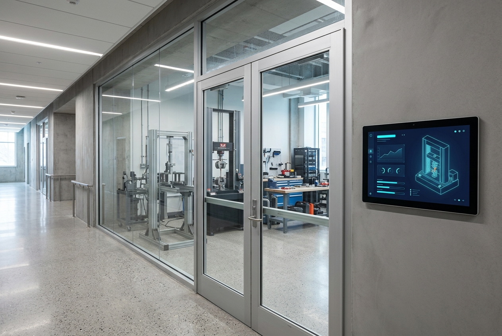
硬件实测对齐说明：全部 10 张界面图均严格按 1:1 设备逻辑像素（横屏 1280×800 / 竖屏 800×1280）、LVGL 8.3.7
LV_COLOR_MAKE16 RGB565 量化色板、5 档单字重字阶（56/40/30/26/22 px）、C4 视频区单条 ≤64px 字幕条与 C10 触控区 ≥64×64 px 规则输出。点击任意高保真图可 100% 放大审阅。
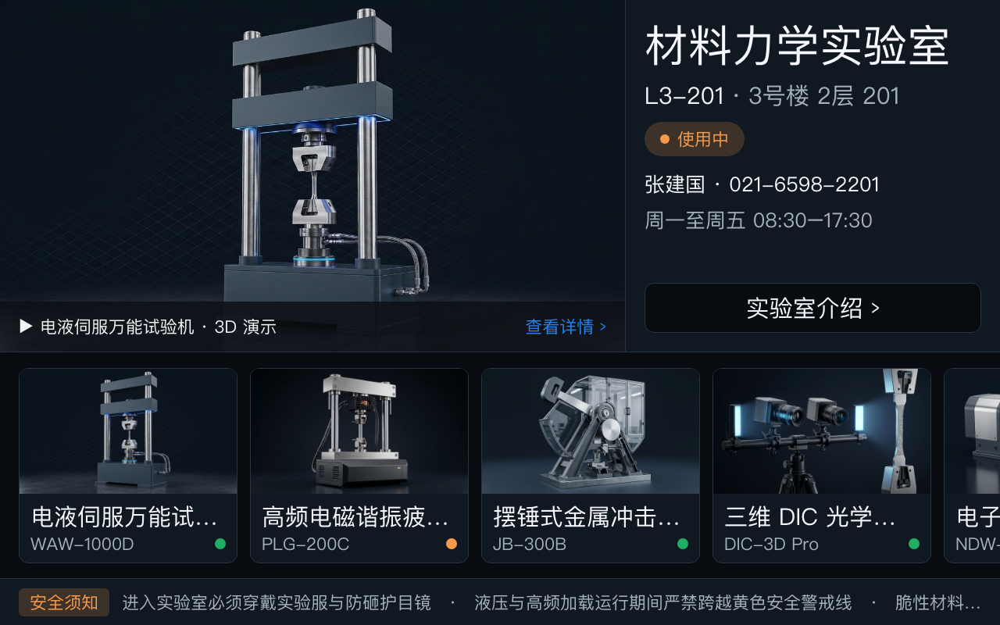
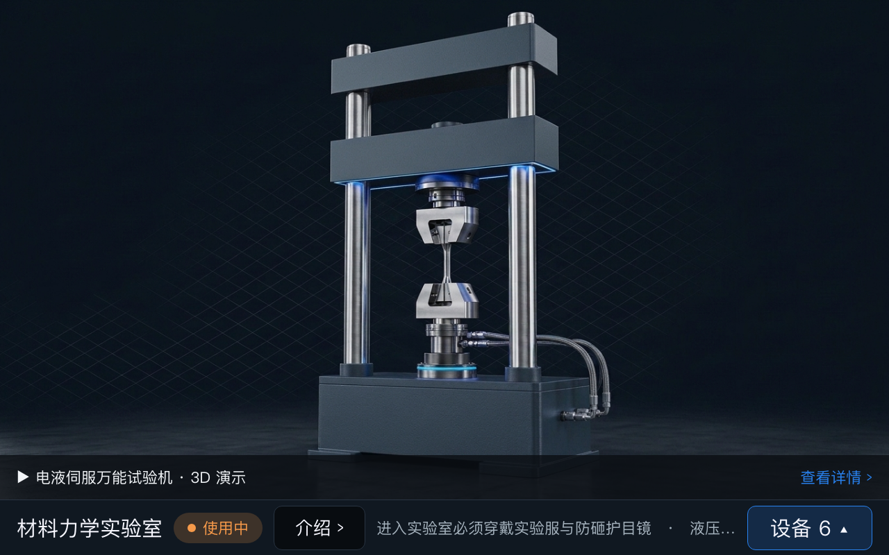
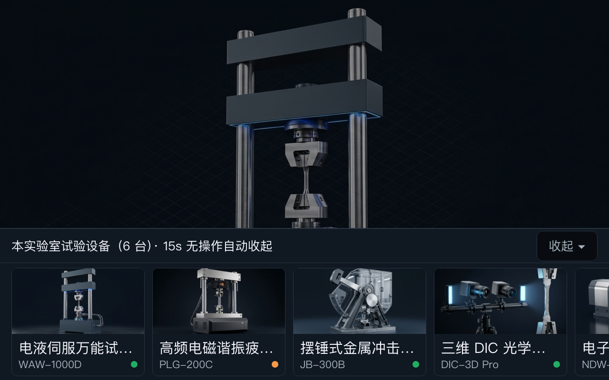
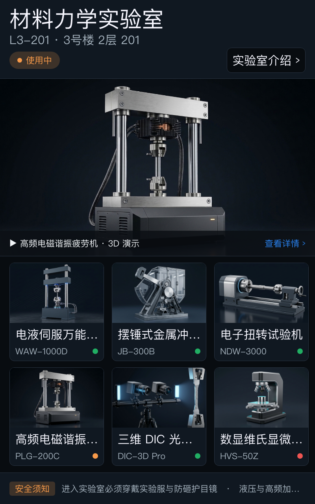
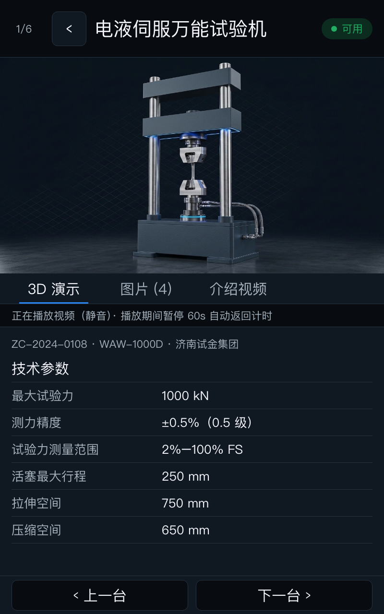
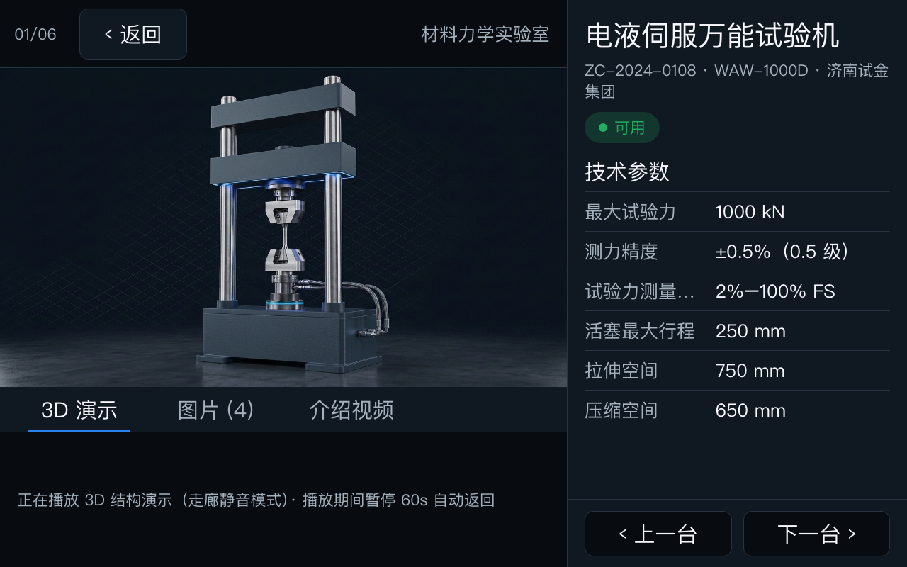
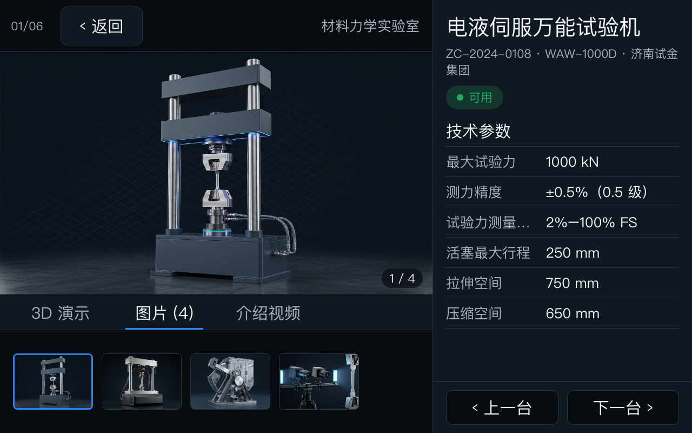
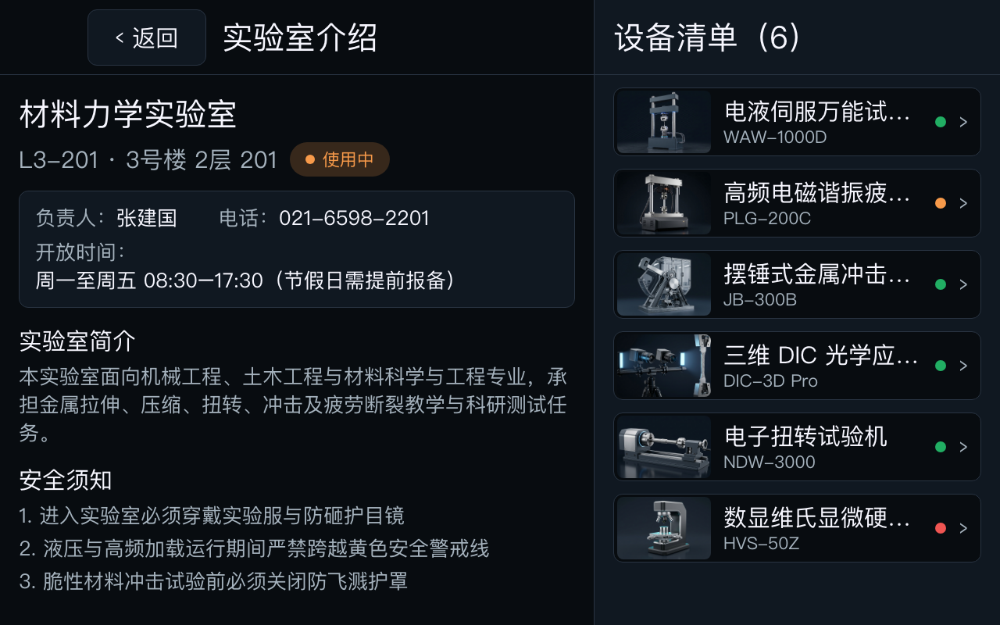
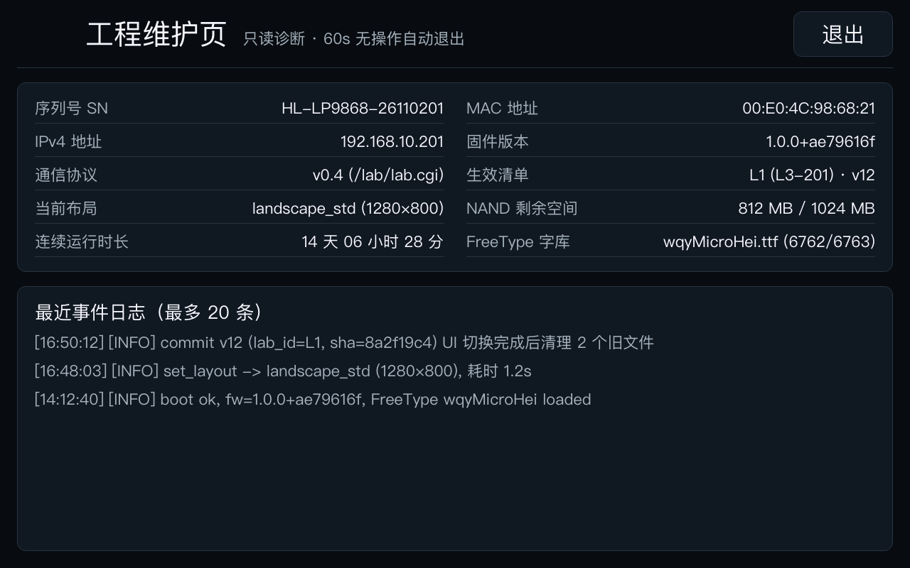
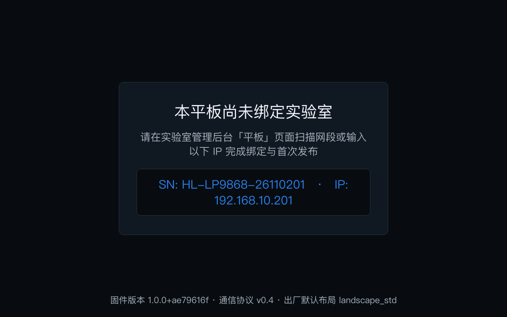